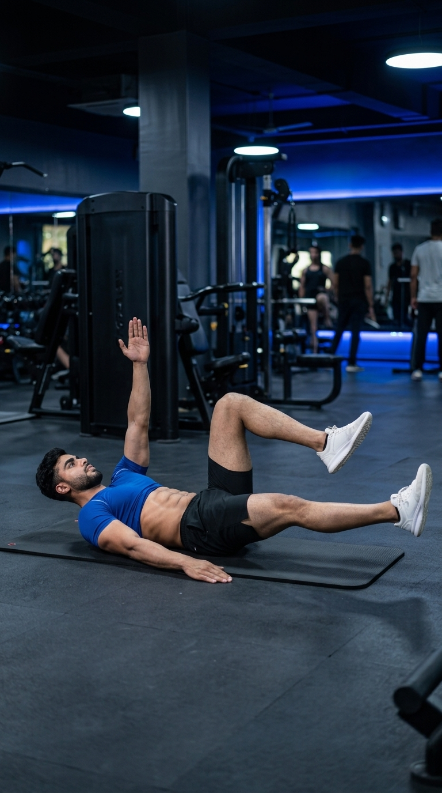

Primary Muscle
Core
Build Core Stability, Improve Coordination, and Protect Your Lower Back
The Dead Bug is one of the best core stability exercises for strengthening the deep abdominal muscles while teaching your body to maintain a neutral spine. By coordinating opposite arm and leg movements, it improves core control, balance, posture, and movement efficiency without placing excessive stress on the lower back. Suitable for beginners, athletes, and individuals recovering from back discomfort, the Dead Bug builds a strong, stable foundation for everyday activities and advanced strength training.

Core
Bodyweight
Beginner
Core Stability
Learn which muscles are activated during the Dead Bug and how they work together to stabilize the spine, improve core control, enhance coordination, and protect the lower back during everyday movements and strength training.
Acts as the Body's Natural Core Brace to Stabilize the Spine and Maintain a Neutral Lower Back Throughout Every Repetition
Helps Resist Lumbar Extension and Maintains Core Tension During Opposite Arm and Leg Movement
Prevent Unwanted Trunk Rotation and Improve Stability While the Limbs Move Independently
Support Controlled Leg Movement While Helping Maintain Proper Pelvic Position and Overall Postural Stability
Discover how the Dead Bug improves deep core stability, strengthens the abdominal muscles, enhances coordination, protects the lower back, and builds a solid foundation for everyday movement, sports, and strength training.
The Dead Bug strengthens the deep core muscles, especially the transverse abdominis, helping stabilize the spine during movement and reducing unnecessary trunk motion.
Learning to maintain a neutral spine throughout the exercise reduces excessive stress on the lumbar spine and promotes healthier movement patterns.
Alternating opposite arm and leg movements enhances neuromuscular coordination, body awareness, and overall movement efficiency.
A stable core improves force transfer between the upper and lower body, benefiting lifting, running, jumping, and many athletic movements.
The exercise teaches you to brace your core while your arms and legs move independently, a fundamental skill for safer strength training and daily activities.
Because it is low-impact and highly scalable, the Dead Bug is ideal for beginners, athletes, and anyone looking to improve core strength, posture, and movement quality.
Follow these step-by-step instructions to perform the Dead Bug with proper technique, maintain a neutral spine, activate your deep core muscles, and improve stability while protecting your lower back.
Lie flat on your back with your arms extended toward the ceiling. Bend your hips and knees to approximately 90 degrees so your thighs are vertical and your shins are parallel to the floor.
Keep your head relaxed and maintain a natural curve in your neck.
Tighten your abdominal muscles and gently press your lower back toward the floor to create a stable, neutral spine before moving your limbs.
Imagine zipping up your core to keep your torso stable throughout every repetition.
Slowly extend your right arm overhead while simultaneously lowering your left leg toward the floor. Move only as far as you can without letting your lower back lift off the ground.
Perform the movement slowly and prioritize core control over range of motion.
Bring your arm and leg back to the starting position, then repeat the movement with your left arm and right leg while maintaining constant core tension.
Avoid shifting your hips or rotating your torso as you alternate sides.
Continue alternating opposite arm and leg movements with slow, controlled repetitions while breathing steadily and keeping your lower back firmly supported against the floor.
Stop each repetition before your lower back arches. Perfect technique is more important than extending your arm or leg farther.
Avoid these common technique mistakes to maximize core stability, maintain a neutral spine, and perform the Dead Bug safely and effectively while protecting your lower back.
Allowing your lower back to lift off the floor reduces deep core activation and places unnecessary stress on the lumbar spine.
Brace your core before every repetition and move only within a range that allows your lower back to stay gently pressed against the floor.
Rushing through the movement relies on momentum, reduces core engagement, and decreases overall exercise effectiveness.
Perform each repetition slowly and maintain complete control from start to finish.
Lowering your arm or leg beyond your current mobility causes your pelvis to tilt and your lower back to lose contact with the floor.
Stop the movement before your lower back begins to arch and gradually increase your range of motion as your core becomes stronger.
Holding your breath increases unnecessary tension and makes it more difficult to maintain proper core stability throughout the exercise.
Exhale as you extend your opposite arm and leg, then inhale as you return to the starting position while keeping your core braced.
Apply these expert coaching cues to improve your Dead Bug technique, maximize deep core activation, maintain a neutral spine, and build better core stability with every repetition.
Your lower back should stay gently pressed against the floor throughout the entire exercise. If it arches, reduce your range of motion until you can maintain proper control.
Keep your back glued to the floor.
Activate your abdominal muscles before lowering your arm and leg. A properly braced core keeps your spine stable and improves overall movement quality.
Brace first, then move.
Slow, controlled repetitions increase core muscle activation and improve coordination far more than rushing through the exercise.
Control every inch of the movement.
Exhale as you extend your opposite arm and leg, then inhale as you return to the starting position. Proper breathing helps maintain core tension and improves stability.
Exhale to brace, inhale to reset.
Progress from learning proper core bracing to developing greater spinal stability, coordination, and advanced core control with increasingly challenging Dead Bug variations.
Learn to maintain a neutral spine while keeping your lower back gently pressed against the floor. Practice holding the starting position before adding movement.
Core bracing, spinal alignment, breathing, and movement quality.
Slowly extend opposite arms and legs while maintaining constant core tension and preventing your lower back from arching.
Coordination, core stability, balance, and movement control.
Hold a light dumbbell, resistance band, or stability ball while maintaining perfect technique to further challenge your core without sacrificing spinal stability.
Progressive overload, anti-extension strength, and improved trunk stability.
Progress to stability ball Dead Bugs, resistance band Dead Bugs, weighted Dead Bugs, or hollow-body variations to build elite core stability and athletic performance.
Advanced core control, spinal stability, and functional athletic performance.
Find answers to common questions about the Dead Bug, including proper technique, muscles worked, training frequency, lower back safety, and how to build a stronger, more stable core.
The Dead Bug primarily targets the transverse abdominis while also engaging the rectus abdominis, obliques, hip flexors, and spinal stabilizers to improve core stability and movement control.
Yes. The Dead Bug is one of the best beginner-friendly core exercises because it teaches proper core bracing, spinal stability, and coordination with minimal stress on the lower back.
For many people, yes. When performed with proper technique and a neutral spine, the Dead Bug helps improve core stability and may reduce stress on the lower back. If you have persistent pain or a medical condition, consult a qualified healthcare professional before exercising.
Perform 2–4 sets of 8–12 controlled repetitions per side while maintaining proper core engagement and a neutral spine throughout every repetition.
Yes. Once you've mastered the basic movement, you can add resistance bands, light dumbbells, a stability ball, or slower tempos to increase the challenge while maintaining perfect core control.
Perform Dead Bugs two to four times per week as part of a balanced core training program. Consistent practice helps improve spinal stability, posture, and overall movement quality.
Explore other core exercises that complement the Dead Bug and help you build greater abdominal strength, improve spinal stability, enhance coordination, and develop complete functional core control through a variety of bodyweight and resistance-based movements.


Continue strengthening your core with detailed exercise guides covering proper technique, muscles worked, common mistakes, expert coaching tips, and progression strategies designed for every fitness level.